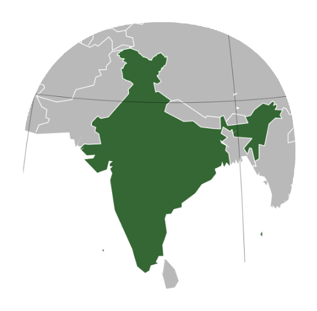

 | HISTORICAL MONUMENTS AND PLACES OF INDIA |
All throughout its history, India has witnessed the rise and fall of several kings, dynasties and empires. Each of those in power, however, left behind their legacy in the form of a
monument, maybe a fort, palace or any other historical structure. Apart from that, there are temples and caves which bear testament to the artistic excellence attained in the past ages.
These places of historical importance aren’t just significant as tourist destinations, they also attract lovers of art and history. As a result, India today is dotted with several
historical places that remind you of its illustrious past and glorious reign.
Monument means any structure, erection or monument, or any tumulus or place of interment, or any cave,
rock-sculpture, inscription or monolith which is of historical, archaeological or artistic interest. These Historical Monuments are the wealth of Indian tourism along with other World
Heritage Sites and Nature tourism places like wild parks and ancient temples of south India. With their elaborate superfluities and wonderful architecture, Indian monuments represent
one of the most outstanding facets of the multi-faceted Indian culture. An architectural feat in itself, each Indian monument is a remarkably splendid sample of unbelievable artistry.
Let us now know about some Historical Monuments and Places of India. The monuments of India have become an inspiration for the future generations.

The Taj Mahal, a beautiful white marble Monument located in the city of Agra on the banks of the holy river Yamuna in the state of Uttar Pradesh. Taj Mahal is the finest example
of combines elements of Mughal, Persian, Ottoman Turkish and Indian architectural styles. It is one of the seven wonders of the world and also one of the must visit place in Uttar Pradesh.
It was built by Mughal emperor Shah Jahan in 17th century for her wife Mumtaz Mahal.One of the most beautiful structural compositions in the world, the Taj Mahal is also one of the world’s
most iconic monuments, visited by millions of tourists each year. It was designated a UNESCO World Heritage site in 1983. It is situated at the bank of river Yamuna.
In 1631, Mumtaz Mahal died after giving birth to the couple’s 14th child. The grieving Shah Jahan, known for commissioning a number of impressive structures throughout his reign,
ordered the building of a magnificent mausoleum across the Yamuna River from his own royal palace at Agra.

The Golden Temple, also known as Harmandir Sahib or Darbar Sahib, is a Sikh Gurdwara located in the Amritsar, Punjab. Shri Darbar Sahibb is the holiest shrine and most famous pilgrimage place for Sikhs. Harmandir Sahib is one of the most sacred places in India, a Holy Granth Sahib is always present inside the temple. The Harmandir Sahib is the focus of a complex of buildings that form the heart of Sikhism. The temple itself occupies a small island in the centre of the tank, or pool, called the Amrita Saras (“Pool of Nectar”)—the source of the city’s name—and is connected to land on its west side by a marble causeway running across the water of the pool.

India Gate war memorial at Rajpath is a distinctive landmark of Delhi and a must visit place in India. The memorial is one of India’s most stunning historical monuments, designed by Sir Edwin Lutyens. It is about 138 feet (42 metres) in height. India Gate is one of many British monuments built by order of the Imperial War Graves Commission (later renamed Commonwealth War Graves Commission). The architect was Sir Edwin Lutyens, an Englishman who designed numerous other war memorials and was also the principal planner of New Delhi.
Red Fort, also called Lal Qalʿah, also spelled Lal Kila or Lal Qila, Mughal fort in Old Delhi, India. It was built by Shah Jahān in the mid-17th century and remains a major tourist attraction. The fort was designated a UNESCO World Heritage site in 2007. The fort’s massive red sandstone walls, which stand 75 feet (23 metres) high, enclose a complex of palaces and entertainment halls, projecting balconies, baths and indoor canals, and geometrical gardens, as well as an ornate mosque. Among the most famous structures of the complex are the Hall of Public Audience (Diwan-i-Am), which has 60 red sandstone pillars supporting a flat roof, and the Hall of Private Audience (Diwan-i-Khas), which is smaller, with a pavilion of white marble.
Hawa Mahal or the 'Palace Of The Winds' located in the heart of the beautiful Pink City of Jaipur in Rajasthan, India, is one of the most famous tourist attractions and a prominent landmark of the city that is renowned for its rich cultural and architectural history. Built in 1799 by Maharaja Sawai Pratap Singh of the Kachhwaha Rajput dynasty, this beautiful structure is predominantly a high screen wall made of pink and red sandstone that facilitated royal women to get an eyeful of the street festivals and busy city life while remaining out of the view of public. This five-storey building in the shape of a crown of Lord Krishna with 953 jharokhas or windows and a beautifully decorated façade resembling a honeycomb of a beehive that gives one a feel of the rich heritage of the Rajputs.